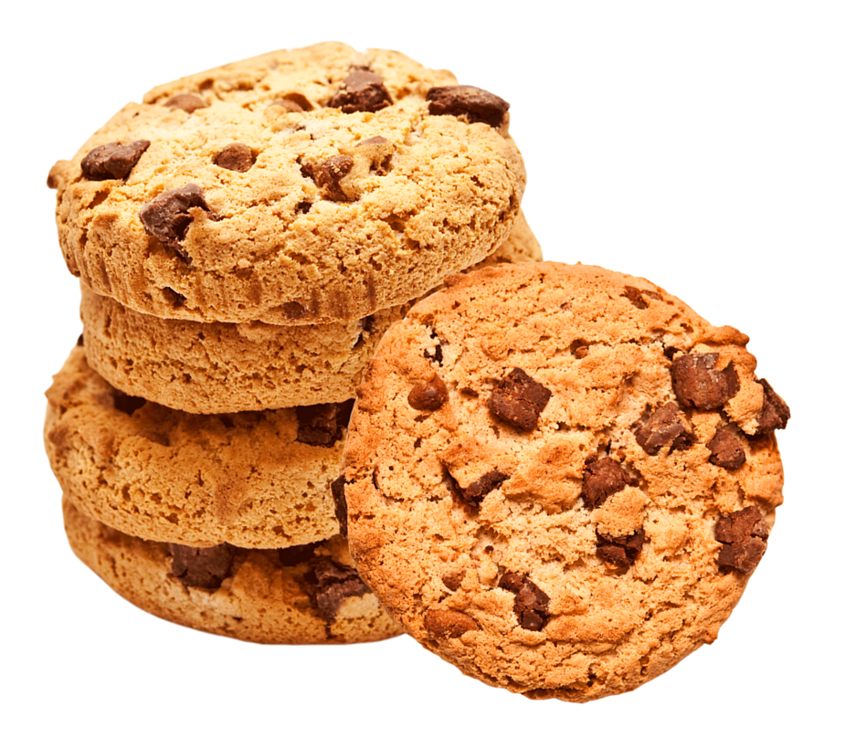

Comment prédire la qualité des cookies ?
Production industrielle de cookies.
Nécessité de comprendre et d'anticiper les éventuels défauts du produit final.
Données fournies par Danone.
Acquisition des données durant le process de fabrication des cookies
La qualité du cookie est liée à la qualité du pétrissage.
Pour chaque fournée, on mesure la dureté de la pâte durant le pétrissage.
on mesure la dureté toutes les 2" pendant 480 secondes.
Quelques exemples de courbes de dureté
1 fournée = 1 colonne = 1 courbe
Quelques exemples de courbes de dureté
1 fournée = 1 colonne = 1 courbe
Quelques exemples de courbes de dureté
1 fournée = 1 colonne = 1 courbe
Après cuisson les cookies sont goutés et jugés
Bons
Moyens
Mauvais
Doit-on cuire et gouter tous les cookies ?
Il devient impossible de traiter ces données "manuellement"
Besoin de mathématiques...
... pour la modélisation...
Besoin de mathématiques...
... et d'informatique pour le traitement.
... pour la modélisation...
Traitement informatique
Résultats
On sait prédire la qualité future des cookies suivant les propriétés de la pâte durant le pétrissage.
On peut ainsi envoyer les bonnes fournées à la cuisson.
Les mauvaises fournées peuvent être retravaillées.